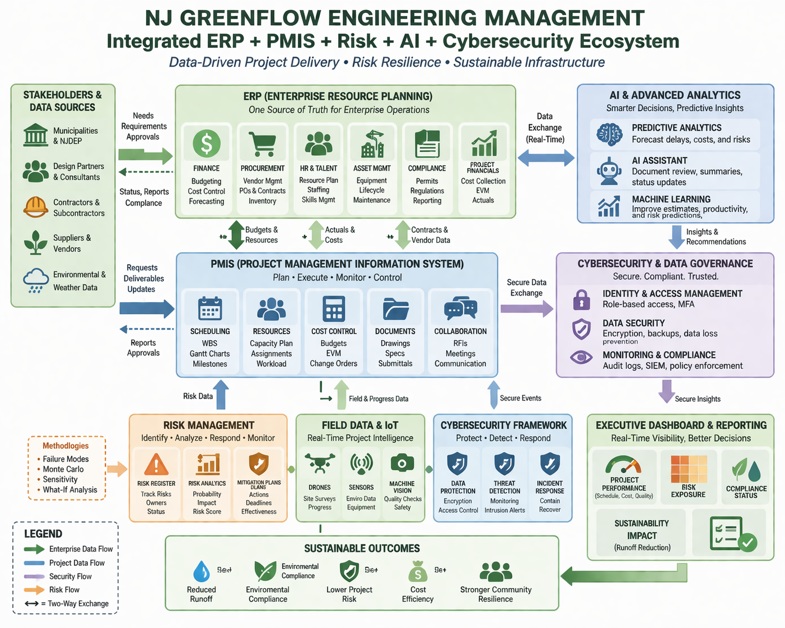

IE492-452 — Dr. Ranky
This assignment studies how modern engineering project management must integrate enterprise systems, trade-off logic, innovation, human-centered automation, artificial intelligence, and cybersecurity into one coordinated managerial framework. The major lesson from the Kerzner text is that project management has evolved from a narrow scheduling activity into a business process connected to enterprise-wide decision making, metrics, value creation, and risk control. The Ranky course materials reinforce the same idea by emphasizing analytical, systems engineering based, quantitative, and problem-solving methods instead of vague essay-style descriptions. Therefore, the best engineering management response is not to treat each topic independently, but to view them as interacting subsystems inside one enterprise architecture. In NJ GreenFlow Engineering Management, which focuses on sustainable stormwater infrastructure, flood resilience, green roofs, pervious pavement, and regulatory coordination across New Jersey, the practical challenge is to manage technical design, municipal communication, compliance, field execution, cost, and information security as one integrated system rather than as disconnected tasks.
ERP and project management work together best when the company understands that projects consume the same enterprise resources that support ongoing business operations. Kerzner explains that ERP systems coordinate resources, information, and tasks needed to complete business and project processes, and that PMIS functions are now part of ERP because decision makers need both business and project information at the same time. In engineering terms, ERP is the enterprise-level information layer, while project management is the execution and control layer. At NJ GreenFlow, ERP would connect project scheduling, budget control, staff availability, procurement status, field inspection records, permit dates, subcontractor commitments, and client reporting. If a municipality requests accelerated design for a stormwater retrofit, the project manager should not make that decision only from the project schedule. The ERP system should also show available civil engineers, environmental reviewers, software licenses, consultant workload, and procurement timing.
Project Feasibility Index = Available Capacity / Required Capacity
If this ratio is greater than or equal to one, the project can be supported with current resources. If it is less than one, then the manager must either delay the schedule, increase staffing, subcontract work, or reduce scope. This is one reason ERP improves project success. It prevents project promises from being made in isolation. In my own NJ GreenFlow company model, ERP would be performed through one integrated workflow: project intake, resource check, compliance check, cost coding, milestone approval, and dashboard reporting. The project manager would use ERP to see whether hydrologic modeling staff are available, whether permitting documents are complete, whether equipment or testing vendors are committed elsewhere, and whether budget codes are aligned with the correct municipality and task package.
The biggest ERP risks and failures in a manufacturing company occur when the system creates a false appearance of control without reliable data. If inventory data, labor data, procurement status, or production reporting is inaccurate, then ERP can spread bad information faster than older manual systems. A second risk is over-standardization. Manufacturing operations need repeatability, but an ERP system that is too rigid can delay engineering changes, product modifications, or urgent maintenance decisions. A third failure mode is poor implementation. If employees are not trained, then the system becomes a reporting burden rather than a decision tool. Another risk is broken integration between departments, where production, finance, quality, and project teams each use the system differently and therefore do not trust the outputs. In manufacturing this can create schedule distortion, procurement mistakes, poor capacity planning, and incorrect cost reporting. The engineering conclusion is that ERP only adds value when the data structure, user discipline, and management decisions are aligned.
Multivariable optimization helps project management by turning difficult judgment calls into repeatable engineering comparisons. Kerzner describes trade-offs as situations where one project aspect may be sacrificed to gain advantage in another, and also explains that projects operate under competing constraints rather than only the older triple constraint view. That is exactly why optimization is useful. The manager must compare cost, time, risk, quality, capacity, and sometimes reputation or safety simultaneously. A simple weighted decision model is:
Minimize F = w1C + w2T + w3R + w4Qloss
where C is cost, T is schedule duration, R is risk exposure, and Qloss is the performance penalty caused by reducing quality or scope. The weights represent managerial priorities. If flood resilience is the main objective for NJ GreenFlow, then performance and risk weights should be high. If a municipality has a hard funding deadline, then time and cost may receive higher weight. This kind of optimization helps engineers compare alternatives such as permeable pavement, bioswales, detention systems, or phased implementation plans using the same logic each time. It also creates a defendable decision trail for executives and clients.
Design of Experiments, or DOE, can also be used in project management, especially where performance depends on several interacting variables. Instead of changing one factor at a time, DOE studies combinations of factors so that the team can learn which variables matter most and whether they interact. In engineering management, the “experiment” may involve process settings, staffing levels, software workflows, review frequency, procurement timing, or site sequencing. For example, NJ GreenFlow could test how permit lead time, design review frequency, and subcontractor coordination affect total project delay. A 2 level factorial DOE for three factors would require structured trials and allow the team to estimate main effects and interaction effects.
Delay = b0 + b1X1 + b2X2 + b3X3 + b12X1X2 + b13X1X3 + b23X2X3
The practical value is that DOE prevents managers from assuming the wrong root cause. A project team may think schedule slip is only a permitting problem, when in reality the interaction between design rework and late procurement is the stronger cause. Therefore, multivariable optimization selects the best alternative, while DOE helps discover which process variables actually drive performance.
Innovative research projects cannot be managed exactly like repetitive production projects because uncertainty, learning, experimentation, and changing requirements are much higher. Kerzner notes that technology-based projects require innovation, creativity, experimentation, and iterative approaches. Therefore, best practice for innovative research project management is to use staged commitment instead of full commitment at the beginning. The project should move through concept definition, feasibility analysis, prototype learning, test validation, and deployment readiness, with decision gates after each stage. In this structure, failure of one concept is not total failure; it is filtered learning. That is why companies associated with innovation, such as NASA, Tesla, Apple, Ford, and Toyota, are useful as benchmark categories. They represent environments where the project manager must protect safety, quality, learning speed, and business value simultaneously.
In my own NJ GreenFlow model, innovative project management would be applied when testing new combinations of green infrastructure, monitoring sensors, digital rainfall modeling, or adaptive maintenance planning. Instead of committing fully to one unproven stormwater concept, the firm would create pilot studies, compare measured runoff performance, document lessons learned, and then scale the best design. Traditional project management from ten or twenty years ago must therefore change for the better. A static plan created once at project start is no longer enough. Modern engineering managers need dynamic baselines, rapid feedback loops, better metrics, integrated data systems, and stronger risk visibility. The project manager is no longer only a scheduler. The manager is a systems integrator, data interpreter, and business decision maker.
Human errors in engineering project management should be treated as system design problems rather than only as personal failures. This does not remove accountability, but it recognizes that many errors emerge from workload imbalance, unclear instructions, poor interfaces, weak checking logic, or missing feedback. Best practice begins with classification. Errors can be design errors, communication errors, data entry errors, field execution errors, handoff errors, or decision errors. Once classified, they can be reduced through standard work, review checklists, independent verification, visual controls, and structured lessons learned. In NJ GreenFlow, human error can occur when incorrect site elevations are entered into a drainage model, when permit deadlines are misunderstood, or when contractors install a green infrastructure component at the wrong grade. The response should include prevention logic.
Risk Priority Number = Severity × Occurrence × Detectability
This simple FMEA-style equation helps the project team rank where human error deserves the most attention. High severity and low detectability errors, such as incorrect infiltration assumptions or unnoticed drainage conflicts, should receive mandatory review and validation steps. Best practice also includes closed-loop communication, where instructions are repeated back, documented, and confirmed. In my company model, I would use design review gates, data verification checklists, and field inspection sign-off points so that one person’s error does not move silently through the system.
Human-centered automation means designing automated systems to support human judgment rather than to blindly replace it. In engineering management this matters because automated tools can process information quickly, but humans still define objectives, interpret ambiguity, handle exceptions, and make ethical decisions. At NJ GreenFlow, human-centered automation would mean using dashboards, sensor data, GIS layers, and document workflows to reduce repetitive administrative work while keeping engineers responsible for technical interpretation and final approval. Siemens is a useful example because large automation environments depend on integration between controls, monitoring, simulation, and decision support. The project management lesson is that automation must be transparent, understandable, and aligned with operator needs.
Digital twins and simulation are especially valuable for complex automation project management because they allow teams to test alternatives before implementation. A stormwater digital twin could simulate runoff behavior, storage capacity, maintenance intervals, and failure scenarios under different rainfall assumptions. Additive manufacturing can support product design project management by accelerating prototypes and reducing iteration time, while CNC prototyping remains important where higher dimensional precision, structural behavior, or material realism is required. Machine vision systems support project management by improving inspection, defect detection, and documented quality control. Edge computing is also increasingly valuable because high-tech project managers need accurate real-time data near the process instead of delayed centralized reporting. For NJ GreenFlow, edge-style logic could be used in distributed monitoring of water levels, flow rates, or sensor alarms across municipal sites. The management benefit is faster detection, better field response, and less delay in reporting abnormal conditions.
Artificial intelligence should be used in engineering project management as a decision-support layer, not as an uncontrolled replacement for engineering responsibility. AI can improve forecasting, anomaly detection, resource planning, document search, risk pattern recognition, and schedule prediction. For example, AI models can review historical project data and estimate which combinations of soil uncertainty, regulatory review, contractor workload, and seasonal weather create the highest probability of schedule slip. In NJ GreenFlow, AI could help classify permit risks, flag unusual cost patterns, summarize field reports, or predict which stormwater assets will need earlier maintenance. However, best practice requires that AI outputs be tested against engineering reasoning and validated against actual project results.
A practical analytical approach is to compare predicted and actual results continuously:
Prediction Error = |Actual Value - Predicted Value|
If the model error grows too large, then the AI tool should not be trusted without recalibration. AI is therefore useful because it increases speed and pattern recognition, but it can also amplify poor data quality, hidden bias, or false confidence. The engineering manager must keep the human in the loop, define acceptable error thresholds, and maintain traceability of decisions.
Cybersecurity in engineering project management should be treated as a project control requirement, not only as an IT support issue. Modern engineering projects depend on shared drawings, models, specifications, field reports, schedules, sensor data, and stakeholder communications. If those data are altered, stolen, lost, or delayed, then project performance, safety, public trust, and legal compliance can all be harmed. Project managers can create cybersecurity protection by defining who has access to what data, how changes are approved, where files are stored, how backups are managed, and how incidents are reported. In NJ GreenFlow this would apply to hydrologic models, GIS files, permit records, municipal correspondence, contractor submittals, and inspection documentation.
A security policy is crucial because it converts general concern into enforceable practice. The policy should define user roles, password and authentication requirements, file classification, encryption expectations, backup frequency, remote access rules, vendor access control, and incident escalation procedures. For engineering projects, one useful risk logic is:
Cyber Risk Score = Threat Probability × Vulnerability × Impact
Files or systems with high impact, such as final drainage designs or regulatory submittals, should receive stronger protection and more restricted access. In my NJ GreenFlow company model, cybersecurity would be performed through role-based access, version-controlled document management, multi-factor authentication, encrypted cloud storage, offline backups of critical design data, and periodic audit review. Staff training is also necessary because many cyber failures begin with ordinary human mistakes such as weak passwords, poor file-sharing habits, or phishing response. Good cybersecurity therefore combines policy, technology, training, and management discipline.

The main engineering management conclusion is that successful projects now depend on enterprise integration rather than isolated control of cost and schedule. ERP connects enterprise resources to project execution. Trade-off analysis and optimization provide defendable methods for selecting among competing alternatives. DOE helps identify the variables that truly drive project performance. Innovation project management requires staged learning, not rigid one-pass planning. Human error reduction depends on designing better systems of review, communication, and detectability. Human-centered automation, digital twins, machine vision, CNC and additive methods, and edge computing all improve performance when they are designed to support human decision making. AI can strengthen forecasting and pattern recognition, but only when data quality and validation are controlled. Cybersecurity protects the digital foundations on which modern engineering work depends. In NJ GreenFlow, these ideas combine into one repeatable engineering management framework: integrate data, quantify trade-offs, learn from controlled experimentation, protect information, and keep human judgment responsible for the final technical decision.
Kerzner, Harold. Project Management: A Systems Approach to Planning, Scheduling, and Controlling. 12th ed., Wiley, 2017.
Ranky, Paul G. IE492 Engineering Management Course Learning Resources, CIMware UK and USA.
Ranky, Paul G. Intro Project Management Multimedia eBook, Educational Version 7.8, CIMware UK and USA.